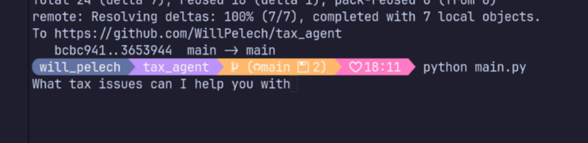

I Built a Tax Agent Without AI built without AI
May 2026 · Python · github.com/WillPelech/tax_agentI just finished a four-month internship at Datadog working on AI agent infrastructure — stress testing agents, building WASM sandboxes, engineering fallback logic between LLM providers. I spent the whole time thinking about agents at scale. So when I got home, I wanted to build one myself, the whole thing, by hand, with no AI helping me write the code.
The project: an agent that does your taxes. Not a chatbot wrapper. An actual agent with a ReAct loop, MCP tooling, a sandboxed execution environment, and a swappable provider layer — everything I'd been working on professionally, built from scratch on my own terms.

Running qwen3:0.6b locally via Ollama
Why taxes?
Taxes are a good benchmark problem for an agent. They require multi-step reasoning — you can't just answer in one shot. There are rules that depend on other rules. You need to look things up, do arithmetic, and handle edge cases that don't fit a simple template. If your ReAct loop is broken, the agent will confidently produce garbage. It's a good stress test.
It's also just a useful thing to have. Tax software is notoriously bad. I figured an agent that could reason through the actual logic would be more interesting than another form-filler.
The ReAct loop
ReAct stands for Reason + Act. The agent alternates between two phases: it thinks out loud about what it knows and what it needs to figure out, then it calls a tool to get more information or take an action. The result comes back, gets appended to the context, and the loop runs again.
This sounds simple but there's a lot of implementation detail in getting it right. How do you structure the prompt so the model actually alternates between reasoning and acting instead of just reasoning forever? How do you parse the tool call out of the model's output reliably? How do you know when the agent is done? Writing it by hand meant I had to make every one of those decisions myself.
MCP tooling
The tools the agent can call are exposed through an MCP server. MCP (Model Context Protocol) is the standard Anthropic open-sourced for connecting models to tools — I'd worked with it extensively at Datadog, including simulating 1,300+ MCP tools in a stress test. Here I kept it simple: a handful of tax-relevant tools served locally.
The registry in agent/registry.py maps tool names to their implementations. The
agent doesn't know anything about the tools ahead of time — it discovers them at runtime from
the MCP server, which is how the protocol is supposed to work.
Sandboxed execution
Tool execution runs inside a sandboxed VM. Nothing the agent calls touches your host machine directly. This was something I spent a lot of time thinking about at Datadog — the security model for sandboxed agent interactions is genuinely hard. For this project the sandbox is simpler, but the principle is the same: you don't let an LLM run arbitrary code on your machine without a boundary.
Provider-agnostic from day one
One thing I got right early was making the LLM client layer fully swappable. Every provider goes through the same interface:
class LLMClient:
def chat(self, message: str) -> str:
raise NotImplementedError
Swap providers by editing model-config.yaml — no code changes needed:
model: "qwen3:0.6b"
provider: "Qwen"
sandbox_url: "http://localhost:8080"The default runs on a tiny local model via Ollama. No API key, no account, no cost. I've been burned too many times by projects that only work if you have a specific provider set up. Everything here runs on your laptop.
Why write it without AI?
At Datadog I was deep in generated code all day. It's fast, and a lot of it is good, but I noticed I was losing the habit of actually thinking through design decisions. When something breaks and the code wasn't yours to begin with, debugging is slower because you're reading it for the first time at the worst possible moment.
Writing this by hand meant I had to understand every piece — the prompt structure, the parsing logic, the tool dispatch, the sandbox boundary. There's no boilerplate here I can't explain. That felt worth doing.